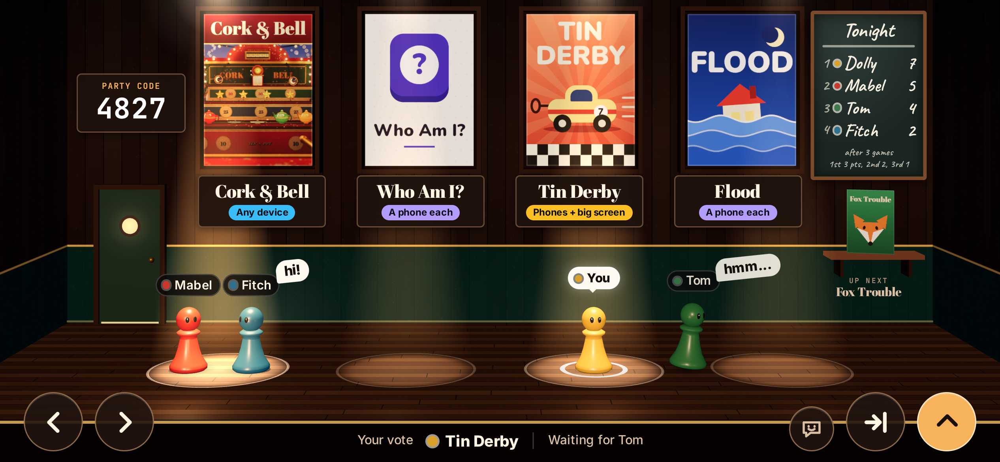
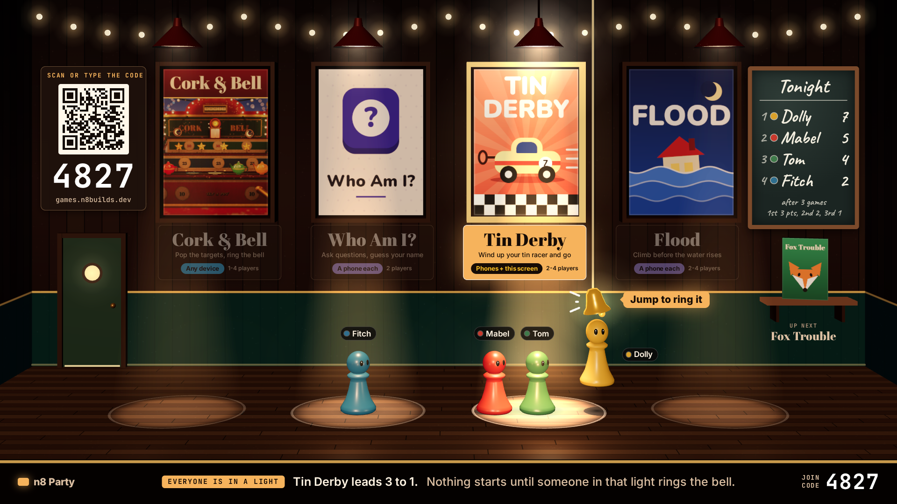
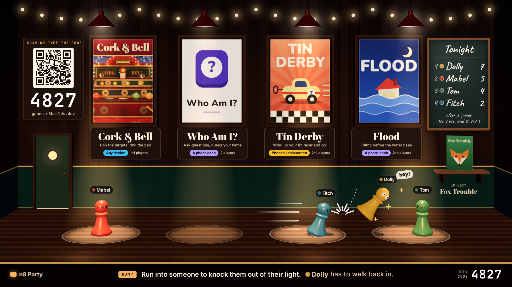
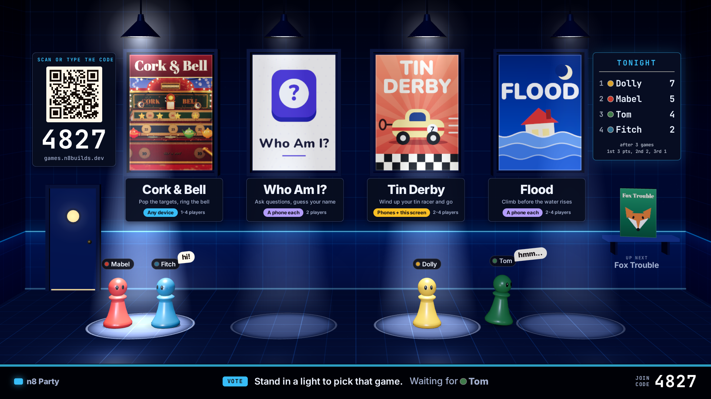

One room, four lights. Your vote is where you stand.
These are stills, drawn to look like a frame from the real thing. Nothing here is playable.
Each game box hangs over a pool of light. Stand in a pool and you are voting for that game; stand in the dark and you have not picked yet.
Tap or click a picture to open it full size.
- The warm bar room leads. The navy room is kept as a second room skin (picture 8).
- Bigger box art, bigger game names, bigger join code, smaller characters. Each sign adds one line about the game and a coloured badge for what you need.
- The coloured dots are gone. The characters standing in a light are the only vote count.
- The swinging lamp is gone. A tie is a coin toss, and what starts a game is spelled out (two ideas, pictures 3 and 3b).
- New: bumping, mixed skins with a trick each, and the night's scores on a chalkboard.

The room, mid-vote
Mabel and Fitch stand under Cork & Bell, so that light is the brightest. Dolly is under Tin Derby. Tom is in the dark, so the bottom line says the room is waiting for him. The join code is on the wall and again at the bottom right, and the night's scores are on the chalkboard.
The one-line descriptions under Tin Derby, Flood and Fox Trouble are my guesses. Tell me what those games really are.

The same moment, on Dolly's phone
The whole room fits, boxes and all, so the phone and the big screen show the same thing. Your piece has a white "You" tag and a ring on the floor. Move with the two buttons on the left; emote, bump and jump are on the right. The phone drops the QR code and the one-line descriptions, and the lamps are just out of frame.
Whether the phone shows the whole room like this, or zooms in and follows you.
Everyone is in a light, so the count runs
Nothing is assumed while anyone is still in the dark (picture 1 says "Waiting for Tom"). The moment all four stand in some light, the game with the most players gets a gold frame and a count on its corner. Step out of your light and the count stops. Most players wins, so Fitch is outvoted here.
How long the count runs, and whether one person standing in the dark can hold everyone up for ever.

Or: somebody rings the bell
No clock at all. When everyone is in a light, a bell drops down at the edge of the leading light. The game starts only when someone standing in that light jumps and rings it. This is the more deliberate version: a player always confirms.
A or B. A is quicker and needs no extra step. B never starts a game nobody asked for, and suits Cork & Bell.

Two against two: flip a coin
The two tied boxes stay lit and get a side each, heads and tails. One gold coin goes up between them. Everything else in the room goes dim.
A coin toss, or let a tie simply wait until someone changes their mind.

Knock a friend out of their light
Fitch runs at Dolly and sends her flying out of the Tin Derby light. Her vote is gone until she walks back in, and the light dims by one player straight away.
How far a bump throws you, and whether there is a short rest before you can bump again.

Four skins, one room, a trick each
The seat colour stays; the shape is yours to pick. The second line on each tag is only a hint of what a trick could be: the chess piece hops higher, the robot shoves farther, the slime is hard to shove, the ghost floats and lands softly.
Whether skins have tricks at all, or are looks only. Tricks make the lobby more of a game and need balancing.

After a game, the chalkboard comes to the middle
Every game gives 3 points for first, 2 for second and 1 for third. Right after a game the board hangs in the middle with what each player just won, and the leader wears a crown. During a vote the same board sits small at the right end of the wall (pictures 1 to 6).
The points (3, 2, 1), and whether the leader keeps the crown during the vote.

The same room in navy
Same layout and rules as picture 1. Only the room changes: the walls, floor, lamps, sign lettering and the scoreboard.
Who picks the room: the host, a vote, or the last game's winner.